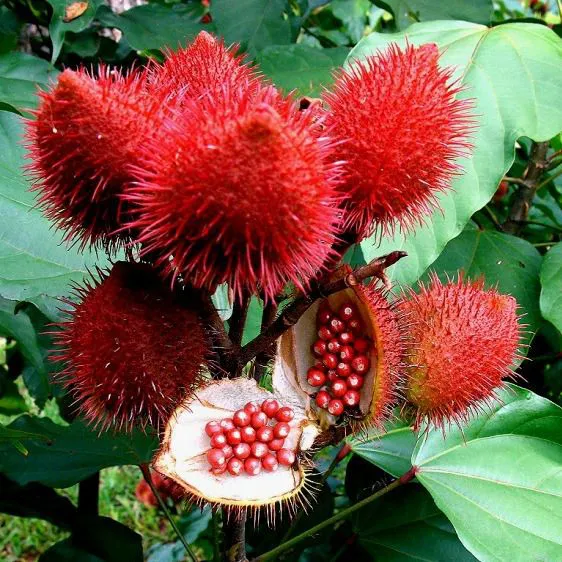

Explorando o processo do colorau. Começamos com o cultivo da urucum, a planta que dá origem ao pigmento. A partir dos frutos, obtemos o corante natural, que é seco e moído. Este pó vibrante é então utilizado na culinária e em diversos produtos. Através de gráficos e animações, o sogo destaca a importância cultural e econômica do colorau.
O urucum, também chamado de colorau ou achiote, é uma planta nativa das Américas tropicais conhecida por seus frutos vermelhos que são utilizados como corante natural e em várias aplicações culinárias. Suas sementes envoltas em polpa vermelha são ricas em pigmentos usados historicamente por culturas indígenas para tinturas e pinturas corporais. Além disso, o urucum possui propriedades medicinais, sendo valorizado por suas propriedades antioxidantes. Cultivado em climas quentes e úmidos, é uma importante fonte de cor e sabor na culinária tradicional e é utilizado na indústria alimentícia e cosmética.
Paranacity, localizada no noroeste do Paraná, é conhecida como a "Capital do Urucum" devido à sua extensa produção desta planta nativa das Américas tropicais. A região possui condições climáticas ideais para o cultivo do urucum, cujas sementes vermelhas são valorizadas pelo seu corante natural usado na indústria alimentícia, cosmética e medicinal. A produção de urucum em Paranacity não só impulsiona a economia local, mas também enriquece a cultura regional, celebrada em festivais que destacam a importância dessa planta para a comunidade.